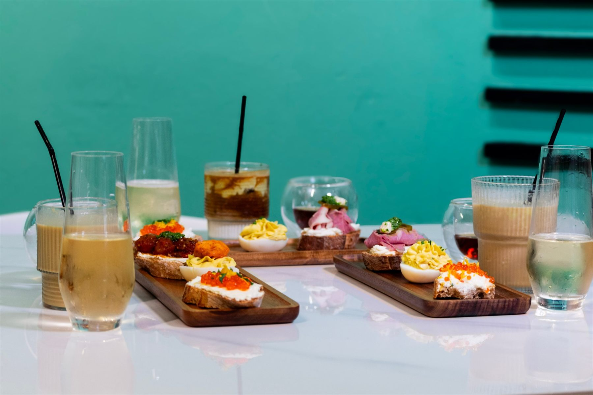
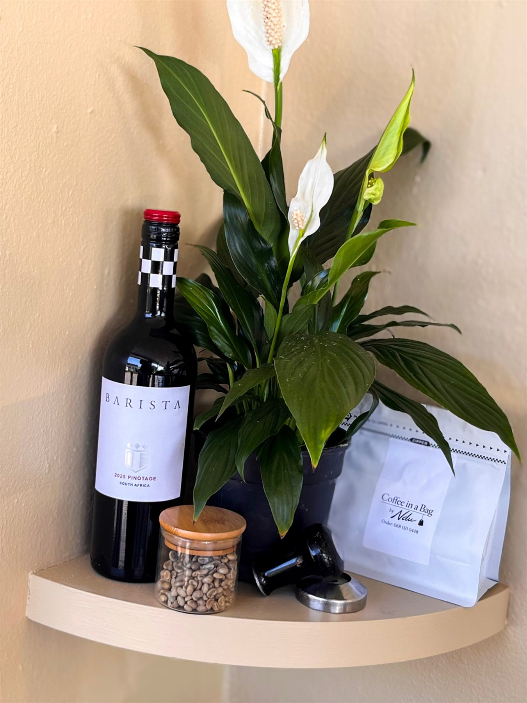
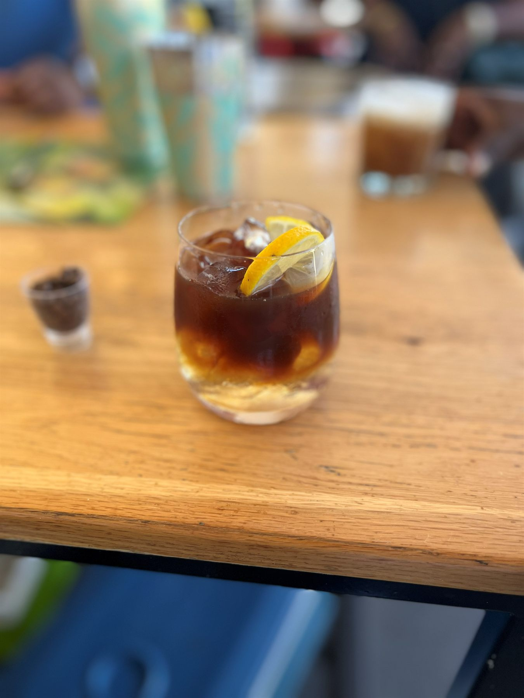
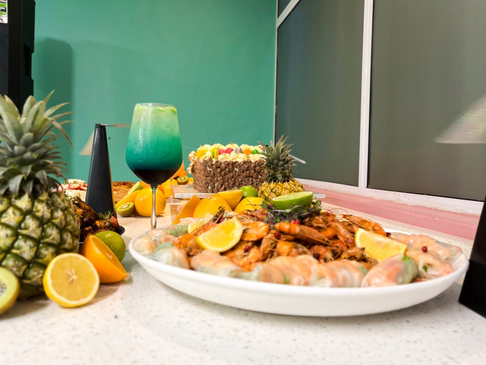

A Durban studiowith an appetite.
Oceans88 Labs Photo & Film is the camera side of Oceans88 Labs, the Durban agency behind brand identities, websites and campaigns since 2024. We shoot the work that brands are built on.

Great brands kept arriving with poor photos.
We built logos and websites for cafés, restaurants and bars, then watched them launch with phone snaps of the food. So we started shooting it ourselves.
Now the same team that designs the brand can light the plate, film the pour and cut the Reel. The photos match the identity, the website has images that fit its layout, and you deal with one studio from the first sketch to the final post.
Behind the lens.
Four rules on every set.
Light first
We'd rather wait twenty minutes for the window light than fix it in the edit.
Shoot it hot
Food and beverages are photographed within minutes of being made, never left to wilt under lights.
Real people
Staff, guests and friends over stock faces. We direct gently so nobody looks posed.
Hand it all over
Every file, every crop, full usage rights. No locked galleries and no surprise licence fees.



Cinema cameras, small footprint.
Enough gear to light a restaurant, small enough not to take it over during service.
9 Gowrans Gardens, Newlands East. Or wherever you are.
We shoot on location across KwaZulu-Natal. Studio visits by appointment.